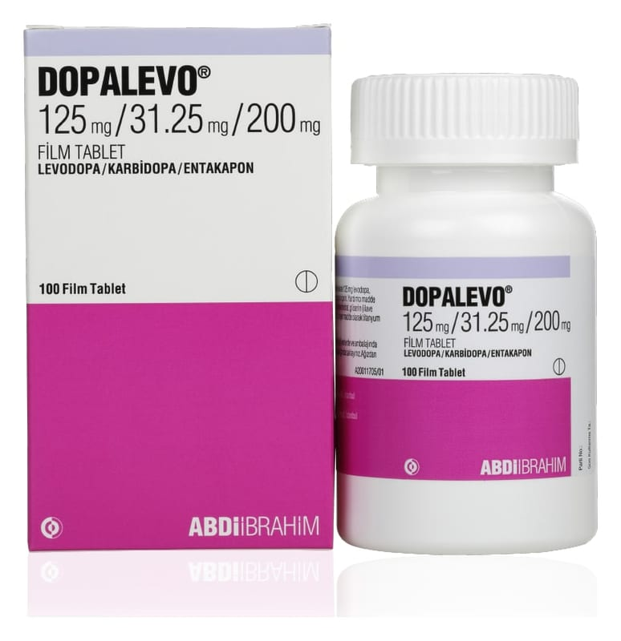

Dopalevo 125 mg/31.25 mg/200 mg Film Kaplı Tablet ,100TABLET

Ne için kullanılır
KT · Bölüm 1: RİLACE PLUS iki etkin madde içerir: lisinopril ve hidroklorotiyazid. Bu maddelerin her ikisi : de kan basıncını düşürür, ancak bunu farklı mekanizmalar aracılığıyla yaparlar. : Hidroklorotiyazid bir idrar söktürücüdür.
:
j İdrar söktürücüler böbreklere etki ederek kandaki suyun idrara geçmesini sağlarlar. Lisinopril : ADE inhibitörleri (anjiyotensin dönüştürücü enzim inhibitörleri) denilen bir ilaç sınıfında yer : alır. Lisinopril kan damarlarınızı genişleterek kan basıncınızın düşmesine yardımcı olur. Böylece : kalbinizin vücudun tüm kısımlarına kan pompalamasını kolaylaştırır.
| Doktorunuz kan basıncınız çok yüksek olduğu için (hipertansiyon) size RİLACE PLUS'ı 3 önermektedir.
; RİLACE PLUS, açık somon renkli, hafif bikonveks tabletler halinde 28 tablet içeren ; ambalajlarda bulunmaktadır.
: 1/9
i
i
j